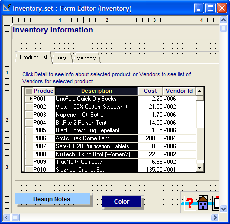
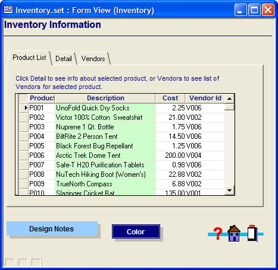

How to Color Columns in a Browse
The color of a browse column is a property that you can set at design time or at run time with Xbasic code.
To set a browse column color at design time.
Open the browse in the Browse Editor.
Double click to select the column.

Right click and select Properties... .
Display the Border tab.
Set the Foreground color.
Save your results and exit the Browse Editor.

This example code was attached to a button and changes the Description column's color to light green. The browse is named browse1.
|
browse1:description.fill.forecolor="Light Green" |
See Also